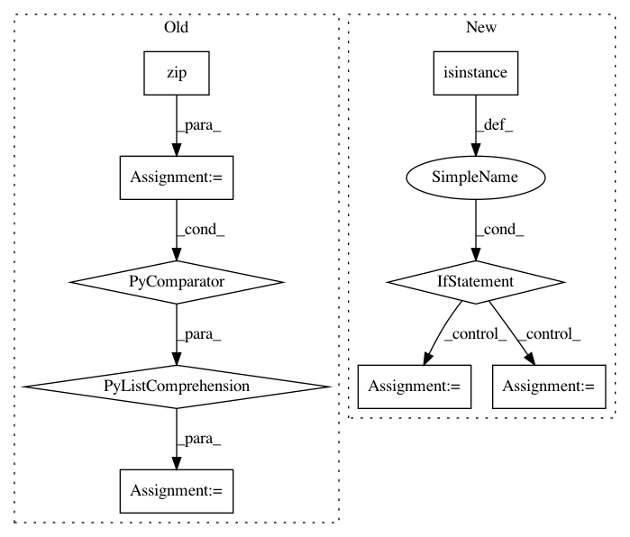

ee950b503eeed5aca3747a4bcf2a40f624b743a0,tensorforce/core/optimizers/multi_step.py,MultiStep,tf_step,#MultiStep#Any#Any#Any#Any#,49
Before Change
step_deltas = self.optimizer.step(
time=time, variables=variables, arguments=arguments, **kwargs
)
deltas = [delta1 + delta2 for delta1, delta2 in zip(deltas, step_deltas)]
return deltas
else:
After Change
with tf.control_dependencies(control_inputs=deltas):
step_deltas = self.optimizer.step(
variables=variables, arguments=arguments, **kwargs
)
deltas = [delta1 + delta2 for delta1, delta2 in zip(deltas, step_deltas)]
return deltas
num_steps = self.num_steps.value()
one = tf.constant(value=1, dtype=util.tf_dtype(dtype="int"))
deltas = self.while_loop(
cond=util.tf_always_true, body=body, loop_vars=(deltas,),
maximum_iterations=(num_steps - one)
)
return deltas
In pattern: SUPERPATTERN
Frequency: 3
Non-data size: 9
Instances
Project Name: reinforceio/tensorforce
Commit Name: ee950b503eeed5aca3747a4bcf2a40f624b743a0
Time: 2019-01-21
Author: alexkuhnle@t-online.de
File Name: tensorforce/core/optimizers/multi_step.py
Class Name: MultiStep
Method Name: tf_step
Project Name: ray-project/ray
Commit Name: 1775e89f262111791fabfd40f80a24f74738fe54
Time: 2020-04-28
Author: sven@anyscale.io
File Name: rllib/models/tf/tf_action_dist.py
Class Name: MultiActionDistribution
Method Name: logp
Project Name: openai/baselines
Commit Name: b71152eea0470ac2629c33e0fc66a54fe494949f
Time: 2018-02-26
Author: matthiasplappert@me.com
File Name: baselines/common/vec_env/dummy_vec_env.py
Class Name: DummyVecEnv
Method Name: step_wait